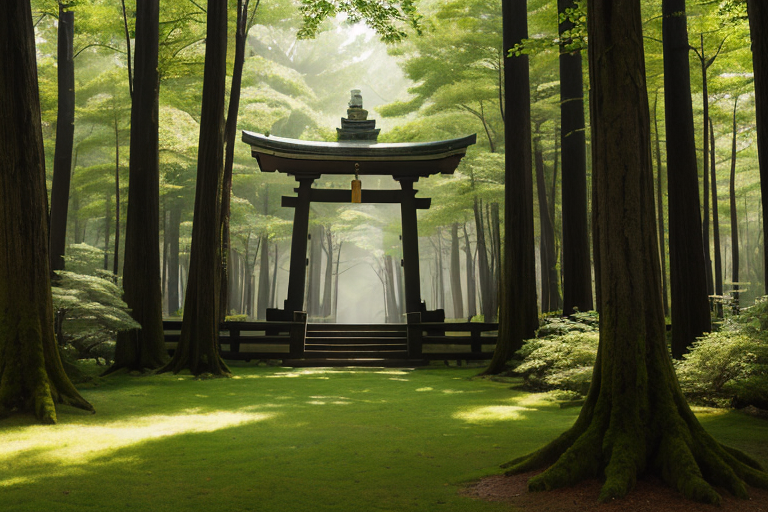
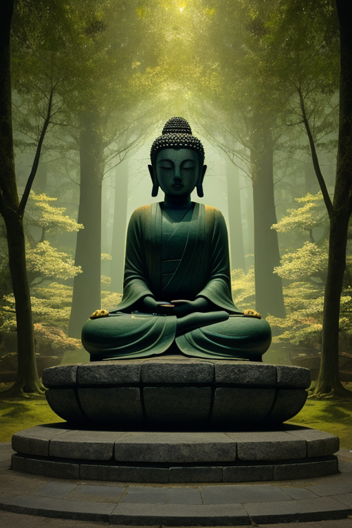
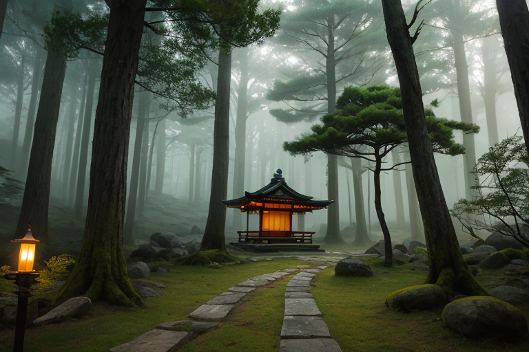
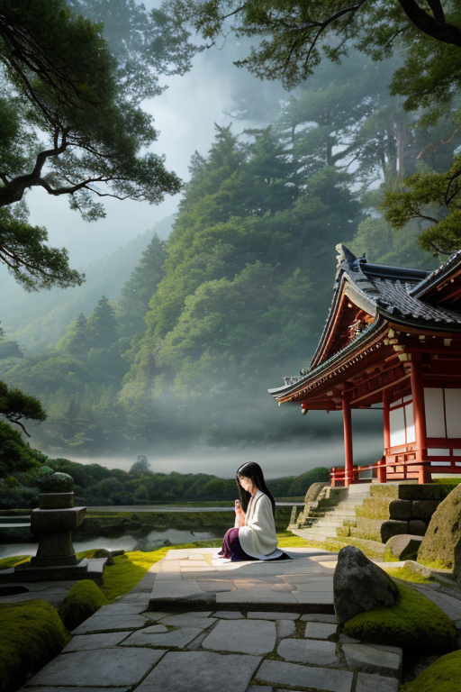
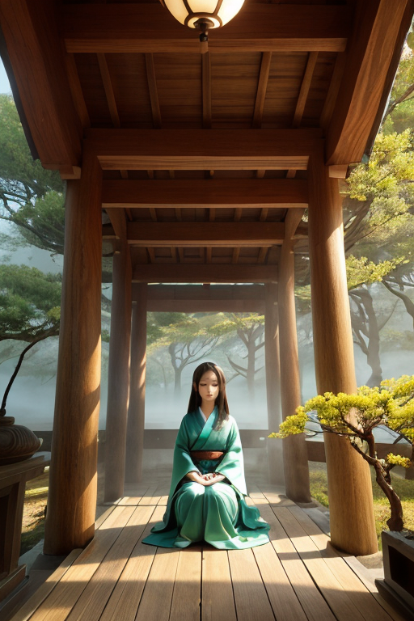

第一章 現実の奈良
あなたはまだ気づいていない。この土地にも、王がいることを。
春日大社の深い森。朱の柱は苔むし、幾重もの杉木立が空を覆う。訪れる人々は、その静けさに自然と声を潜める。鹿が苔を踏む音、風が葉を揺らす音だけが、濃密な時間を刻む。ここでは、祈りが形を持ち、静寂が質量を帯びているように感じられる。東大寺の大仏殿も、法隆寺の夢殿も、同じ空気を湛えている。悠久の時間が堆積した古都の、深い息づかい。
その静けさの底で、地殻はゆっくりと歪みを蓄えている。奈良盆地を形成した活断層は、今も微かに蠢く。観光客が鹿せんべいを手に公園を歩くその足元で、巨大な力の均衡が、常に、ほんの少しだけ調整を必要としている。
誰も知らない。この静寂そのものが、歪みを吸収する緩衝材であることを。そして、その静寂の中心に、古木のように佇む「何か」が存在することを。すべては、あまりにも自然に、あまりにも古くから、ここに在り続けている。

第二章 歪みの兆候
東大寺の大仏殿。巨大な盧舎那仏の掌には、今日も静かな埃が積もる。観光客のざわめきは、この空間の深い静寂をかき乱すことはない。むしろ、そのざわめきさえも、千二百年という時間の層に吸収され、祈りの一部となる。王は、大仏の眉間の白毫の裏側、光と影の境目に立っていた。目は閉じている。耳は、地の底より、遥か上方より、降り注ぐ「祈り」の振動を聴いている。
平城京の時代から連なるその祈りの波長に、ほんの少しの乱れが生じ始めていた。吉野山の修行者の瞑想が、一瞬、地鳴りを思わせる低音に攪乱される。春日大社の神官が奉納する祝詞のリズムが、微かに、ほんの一音分だけ早まる。それは、地殻の歪みが増大する前兆であり、人々の無意識が感知する、目に見えない圧力の反映だった。
王は、その乱れを「古層」へと沈めていく。一つひとつの揺らぎを、鹿が森に消えるように、古木の年輪が一本増えるように、静寂の深みへと導いた。調整とは、否定ではない。増幅する歪みのエネルギーを、この土地が千年かけて培った「受け止める静けさ」へと変換する、極めて繊細な作業である。

第三章 古層の問い
東大寺の二月堂、修二会の行が深夜に執り行われる。松明の火が闇を揺らし、人々の祈りが積層する。その祈りの重みは、時に地盤をもわずかに圧迫する。ナラティアは、その圧力を掌で受け止め、古い木々の根が水を吸い上げるように、静かに分散させていく。
作業は完璧だった。歪みは増幅せず、消えた。しかし、彼の内側に、一つの「問い」が沈殿し始めていた。人々が祈る時、その願いはどこから始まるのか。この土地の静寂は、誰が最初に刻んだのか。自らの存在そのものの始原が、忽然と不確かになった。彼は感情を持たないはずだった。この「問い」は何か。
彼は春日山の原始林に立ち、千年を超える杉の気配を感じた。そこには、王の調整以前から存在する、より深い「受け止める静けさ」があった。自分はその静寂の「子」なのか、それとも「番人」なのか。始まりの地点が、自らの内側にも、外側にも、見えなくなった。沈黙が、彼自身を蝕み始める。

第四章 妖精との対話
東大寺二月堂の舞台から、奈良の町を一望する。オリジェラは、王の隣に立っていた。
「あなたは、『始まり』を探しておられる。でも、それは、どこか遠くにあるものではないのです」と、彼女は穏やかに言った。「この土地の祈りは、何百年も、何千年も、同じ問いを繰り返してきました。『始まりはどこにある？』と。その祈りそのものが、今ここにある『始まり』なのです」
王は黙って聞く。彼の内側を蝕む沈黙は、妖精の言葉を吸い込む。
「私たちが保存する『古代波』は、過去の痕跡ではありません。祈りが、願いが、生と死が、この土地に染み込んで生まれた『現在の質感』です。あなたの調整も、それと同じ。歪みを前にした人々の『今』を、ほんの少し、静かに受け止める方向へと整えること」
ヤマトナが、そっと近づいた。その瞳には、原始の森の静けさが映っている。
「あなたが感じた『受け止める静けさ』。それは、あなたが生まれる前からあったもの。でも、あなたがここに立って、それを感じた『今』、その静けさは、あなたを通して新たに始まっています。始まりは、いつも『今』のなかに、幾重にも折り重なっているのです」
王は、自分の内側の沈黙が、単なる空虚ではなく、この古層の祈りが生み出す深い共鳴室であることに、初めて気付き始めた。

第五章 微調整と余韻
東大寺の大仏殿の影が、午後の光の中で最も長く伸びる時刻。王は、その巨大な軒下に立っていた。彼の役割は、ここで生まれる「祈りの波」の古層を保存し、その静かな振動が、地中の歪みと共振して激化することを、かすかに調整することだ。彼は何も造らず、何も壊さない。ただ、無数の願いが織りなす精神的な「重み」が、物理的な地盤を押しつぶさないよう、その圧力を古代波保存妖精たちと共に、目に見えない次元へと分散させ続ける。
鹿せんべいを手にした子供の笑い声が、奈良公園の静寂を破る。その一瞬の「音」の波紋が、王の調整する「祈り」の古層と交差する。王は微かに目を細めた。感情というものが、この交差点で生まれることを、彼は知った。災いを消せないが、この交差する波紋の位相を、ほんの少しずらすことはできる。悲しみの密度が高まりすぎないよう、偶然の風向きを変える。
吉野山の桜は、まだ長い眠りについている。だが、その地中では、次の始まりに向けた微かな脈動が始まっていた。王はそれを感じ、ただ静かに見守る。すべての終わりは、次の始まりを内包している。彼自身の内に芽生えた「静寂への愛おしさ」という感情も、また、何か新しいものの、ほのかな始まりなのだろうか。
彼は振り返らず、古都の静けさの中へと溶けていった。
あなたの町にも、王がいる。